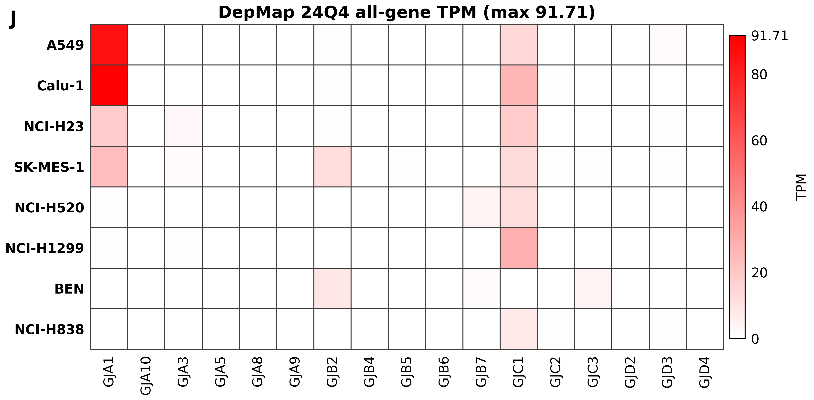

Expression: OmicsExpressionAllGenesTPMLogp1Profile.csv; default profile map: OmicsDefaultModelProfiles.csv; release article: DepMap 24Q4 Public.
Checksums are recorded in source_urls_and_checksums.md.
python3 ext7c_depmap/publication/extended_fig7c_depmap_24q4_tpm_connexin_heatmap/scripts/generate_extended_fig7c_depmap_24q4_tpm_connexin_heatmap.py --force